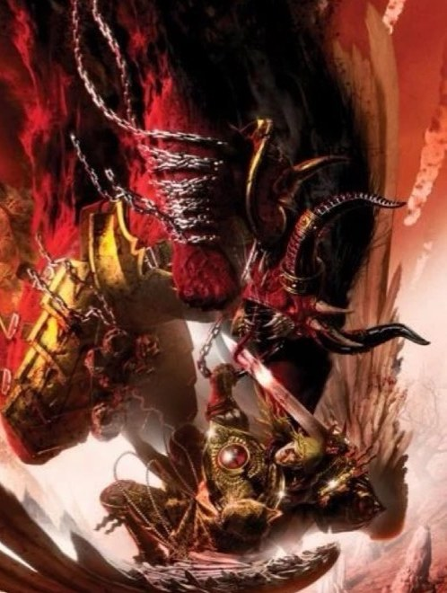

Ka'Bandha
| Ka'Bandha | |
|---|---|
| Bloodthirster of Khorne, nemesis of the sons of Sanguinius | |
 Ka'Bandha over Sanguinius on Signus Prime, c. 006.M31, from a Blood Angels triptych Artwork © Games Workshop | |
| Lord of the daemon host of Signus | |
| Tenure | c. 005–006.M31 |
| Opponent | Sanguinius and the IX Legion |
| Type | Bloodthirster, a Greater Daemon of Khorne |
| First recorded | Signus Prime, c. 006.M31 |
| Banishments | Siege of Terra, 014.M31, by Sanguinius; Khartas, 999.M41, by the Sanguinor |
| Status | Active; last recorded at Baal Prime in 999.M41 |
| Allegiance | Khorne |
| Enemies | Sanguinius; the Blood Angels and their successors; Commander Dante |
| Wargear | Axe and barbed whip |
| Known for | Defeating Sanguinius at Signus (c. 006.M31); the slaughter of Hive Fleet Leviathan at Baal (999.M41) |
Ka'Bandha is a Bloodthirster, a Greater Daemon of Khorne, and one of the Blood God's most feared servants. He is the oldest enemy of the Blood Angels. In the Signus Campaign of the Horus Heresy, in c. 006.M31, he struck down the primarch Sanguinius on Signus Prime and told him of Horus's coming treachery. At the Siege of Terra in 014.M31 Sanguinius broke his back and threw him from the walls of the Imperial Palace.[1][2]
Ka'Bandha returned in 999.M41 and attacked the Baal System, and was banished by the being known as the Sanguinor on the world of Khartas. Later in the same year, at the climax of the Devastation of Baal, his daemon host destroyed the remaining bio-ships of Hive Fleet Leviathan in orbit and so saved the Blood Angels from extinction. The Ordo Malleus holds that he did so because he means to destroy the sons of Sanguinius himself, and will let no one else do it.[3][4]
History
[edit]Signus Prime
[edit]Early in the Horus Heresy the Warmaster sent Sanguinius and the IX Legion to the Signus Cluster, a triple star system whose worlds had been seized by daemons and witch-cults. Horus intended the Legion to be lost there. The Blood Angels fought their way to Signus Prime, the heart of the daemonic realm, and across the Plains of the Damned. There Sanguinius met Ka'Bandha for the first time.[1][2]
The daemon taunted him with the news that Horus would betray the Emperor. Sanguinius attacked in fury and drove his sword into its chest. Ka'Bandha wrapped its whip around his legs, struck him down with the flat of its axe, and then, with the primarch helpless at its feet, cut down 500 Blood Angels in a few sweeps of the axe. The psychic shock of so many deaths among his sons left Sanguinius unconscious.[1]
The Blood Angels' rage at Signus was fed by the Ragefire, a device of the Word Bearer Erebus that drew on the curse in the Legion's blood and drove it towards Khorne. When Sanguinius recovered, he faced Ka'Bandha again and this time defeated the Bloodthirster and sent it back into the Warp. The Legion then found and destroyed the Ragefire.[1][2]
The Siege of Terra
[edit]Ka'Bandha came to Terra with the daemon hosts of the Traitors in 014.M31. In the last days of the Siege of Terra he faced Sanguinius at the Eternity Gate, the last gate before the Sanctum of the Emperor. He struck the primarch down, but as he prepared the killing blow Sanguinius rose, seized him by the wrist and ankle, flew high into the air with him and broke his back across his knee. He then hurled the daemon down into the Traitor host, and the Eternity Gate was closed behind the defenders. Ka'Bandha was banished to the Warp. Sanguinius died soon afterwards aboard the Vengeful Spirit.[1][2][a]
Return to Baal
[edit]
Ka'Bandha was not seen again for about ten thousand years. In 999.M41 he came out of the Warp at the head of a great host and attacked Ammonai, the outermost world of the Baal System, while a tendril of Hive Fleet Leviathan approached the Blood Angels' homeworld of Baal. Commander Dante called on the Blood Angels' successor Chapters, and all except the Lamenters came. On the world of Khartas, Ka'Bandha met the Sanguinor, the golden winged warrior whom the Blood Angels call the Exemplar of the Host. The two fought to exhaustion. At last the Sanguinor seized the Bloodthirster and carried him so high into the sky that the air thinned, then let him fall. Ka'Bandha struck the ground, his body broken, and was cast back into the Warp. The Sanguinor vanished.[3][2]
The Devastation of Baal
[edit]Later in 999.M41 Hive Fleet Leviathan fell on Baal itself in the Devastation of Baal. The defenders were reduced to a last stand in the ruins of the fortress-monastery when the Great Rift opened across the galaxy. No more attack waves came, and the Indomitus Crusade of Roboute Guilliman arrived to find the hive fleet gone. On the stripped moon of Baal Prime the crusaders found the skulls of the xenos piled into the eight-pointed star of Khorne, the sign of Ka'Bandha and his host. The Blood Angels take it that their oldest enemy saved them so that he might one day destroy them himself.[3][4]
Powers and wargear
[edit]Ka'Bandha fights with an axe and a barbed whip, like many Bloodthirsters, and is counted one of the deadliest in single combat of all the Blood God's servants. He seeks out the sons of Sanguinius above all others, and the Blood Angels record that the Red Thirst and Black Rage of the Chapter grow worse when he is near.[4][2]
Timeline
[edit]| Date | Event |
|---|---|
| c. 006.M31 | Defeats Sanguinius on Signus Prime; later banished by him |
| 014.M31 | Back broken by Sanguinius at the Eternity Gate; banished |
| 999.M41 | Attacks Ammonai in the Baal System |
| 999.M41 | Banished by the Sanguinor on Khartas |
| 999.M41 | His host destroys Hive Fleet Leviathan above Baal |
See also
[edit]Notes
[edit]- ^ The accounts of the Siege place this duel at the Eternity Gate in the final days of the defence. Some Blood Angels traditions set it atop the Delphic Battlement. The year, 014.M31, is not in dispute.
References
[edit]- ^ a b c d e Codex Adeptus Astartes - Blood Angels (8th Edition), pp. 21-23. Games Workshop.
- ^ a b c d e f Codex: Tyranids (8th Edition), pp. 28-29. Games Workshop.
- ^ a b c Swallow, James. Fear to Tread (novel). Black Library.
- ^ a b c Warhammer 40,000: Rulebook (8th Edition), "Devastation of Baal", pg. 52. Games Workshop.